When we decided to run an Internet of Things hackathon at DEVOXX UK this year we weren’t entirely sure what would happen. We figured if we provided good food and some drinks it would at least be interesting. As it turned out, everyone seemed to have fun, the pizza was amazing, and there were some cool hacks.
DEVOXX UK is a developer conference hosted in London and is part of the wider DEVOXX family. I attended several of the sessions and was impressed with the high quality of talks, which were mostly very well attended. We were there both days, on a stand in the main hall. On the Thursday evening, we enticed a bunch of willing developers to leave the main party and join us to come up with some cool ideas around the Internet of Things and Liberty profile. We recently released into Github a sample feature for Liberty profile that means you can get your Java applications talking to an Arduino. We wanted to give it a whirl…
{kind=link}
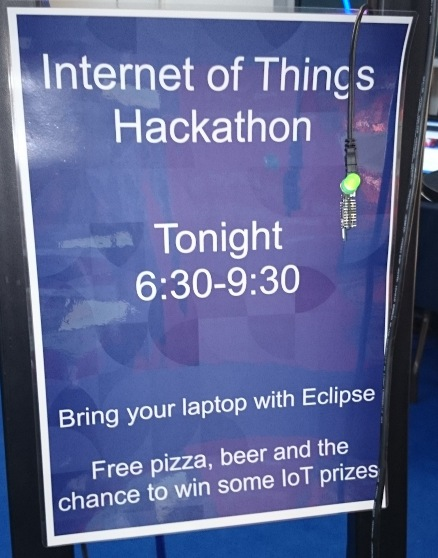
The rules of the Internet of Things hackathon at DEVOXX UK
{kind=link}
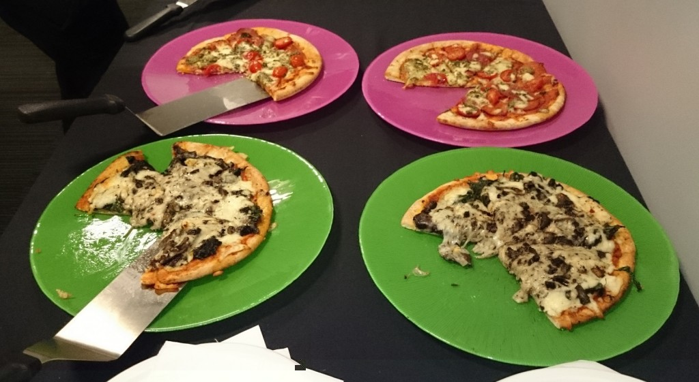
- Max. 4 people per team.
- Come up with some cool Internet of Things hack in 1.5 hours.
- Use at least two different sensors in the hack.
- Use Liberty profile with the new Arduino sample feature in the hack.
- Return the full Arduino kit to us at the end (sorry).
- Eat as much pizza as you can (there was a lot).
{kind=link}
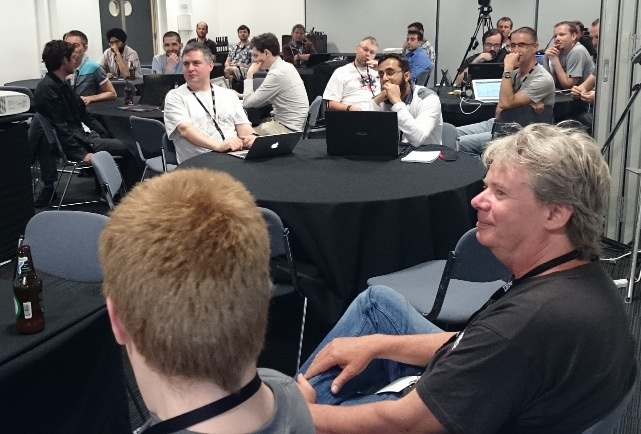
Opening the box
{kind=link}
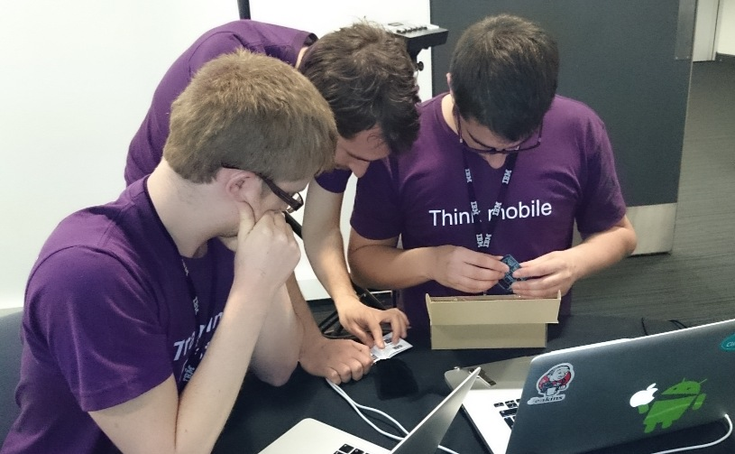
The box each team received contained an Arduino, a shield, and nearly 40 sensors, and LEDs, of various types. There was a small manual in the box of Arduino bits but some sensors took a bit of web searching to understand. The “flame detector” generated the most interest, especially in considering how to test it in a conference room.
{kind=link}
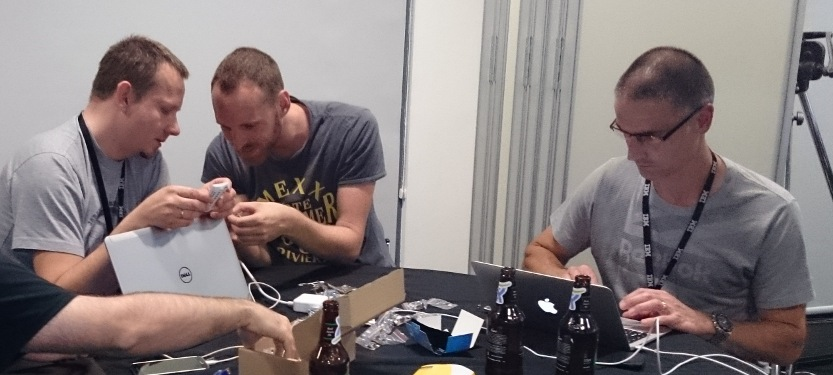
Coming up with ideas
{kind=link}
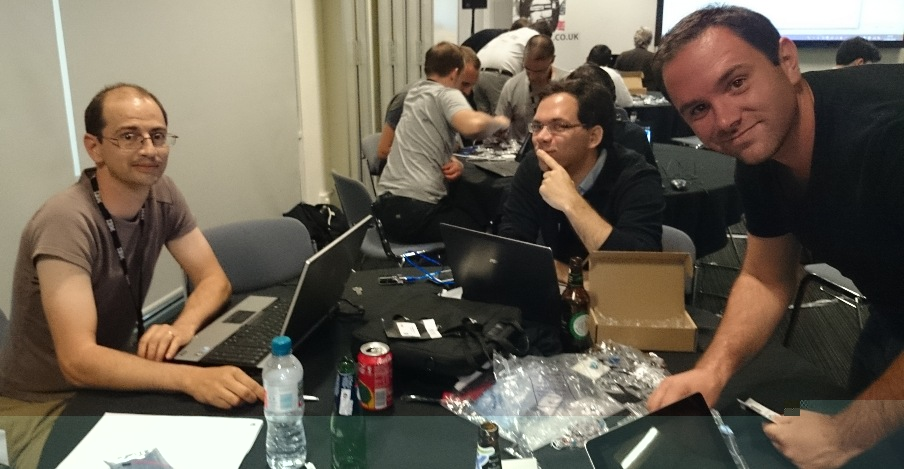
{kind=link}
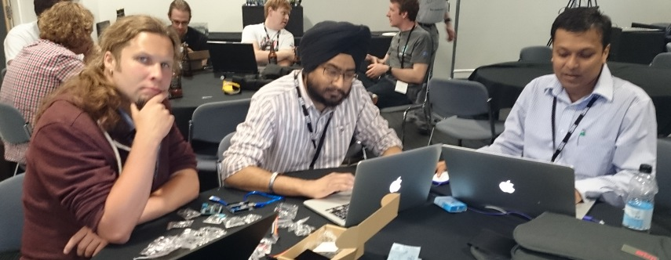
{kind=link}
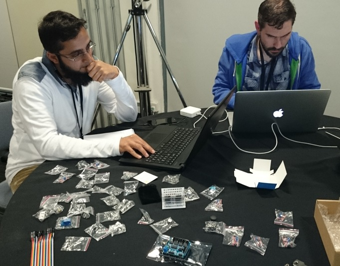
{kind=link}
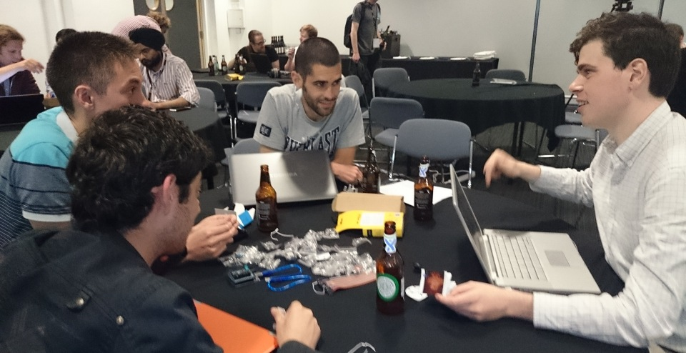
Building
{kind=link}
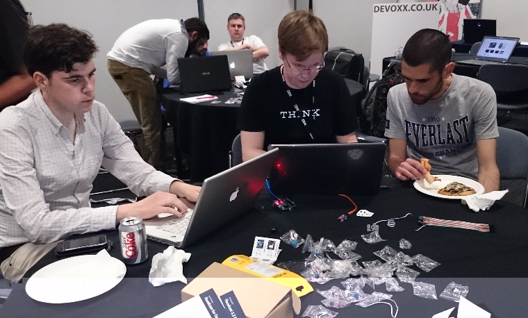
Experience of Arduinos varied enormously across and within the teams. That combined with the limited time available meant that we weren’t sure how many working prototypes we’d get by the end. Most people managed to get an LED to light up, at least.
{kind=link}
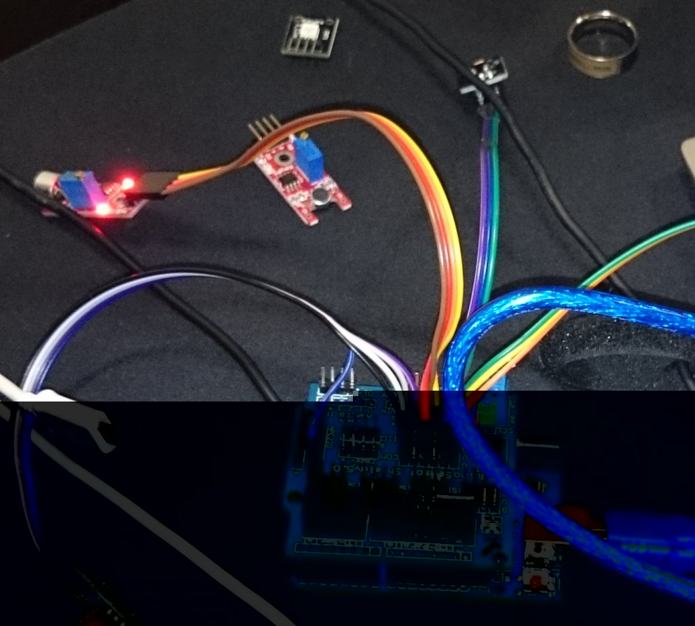
Judging
At about 9.30pm, we started the judging. Three of the DEVOXX UK committee members (in the vivid green t-shirts) took responsibility for judging and seemed to enjoy playing at dragons.
Simple streetlights
Sensors:
- Light sensor
- LED (yes, we know, but the kit called it a sensor so teams were welcome to consider it as such)
They’d got it 90% working and then the sensors they were using packed up.
{kind=link}
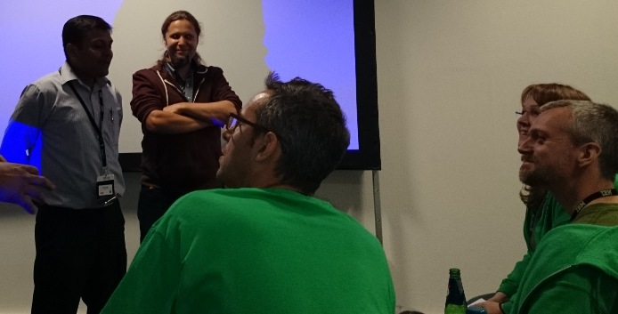
Laptop security
Sensors:
- Tilt
- Buzzer
- LED
- Switch
The switch arms the device, then when the laptop is detected to be tilting, a buzzer goes. One of the judges suggested they could remove the switch completely and just detect it being still and consider that as ‘armed’.
Controlling a quadcopter
Sensors:
- Light sensor
- Joystick
They originally wanted the quadcopter to rise as the volume of people clapping increased. Unfortunately, there was no API for this and, having attempted the maths and failed, they used a light sensor instead. There was some maths to do with this too, and cause much trial-and-error amusement when the copter just kept trying to rise through the ceiling.
{kind=link}
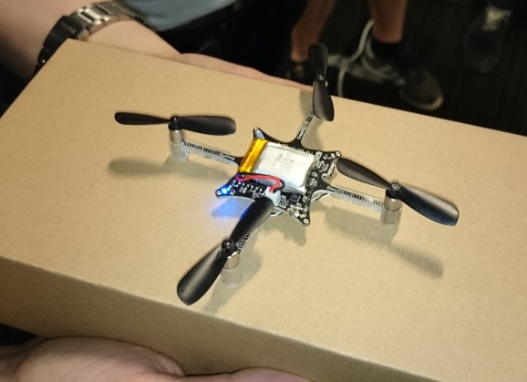
{kind=link}
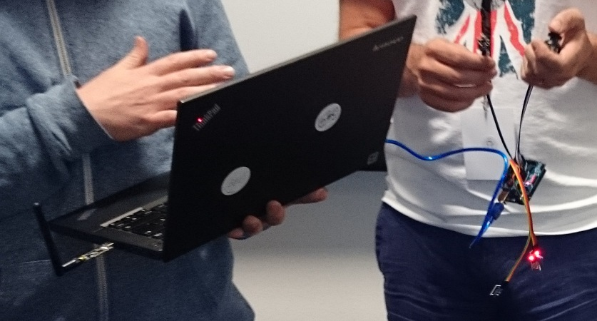
World Cup supporters
Sensors:
- Microphone
- Vibration sensor
- RGB LEDs
The mic and vibration sensors detect the noise of the supporters. The RGB LEDs give feedback to the supporters. A JSP page displayed the betting list on the matches so that the amount of noise influenced the betting behaviour.
{kind=link}
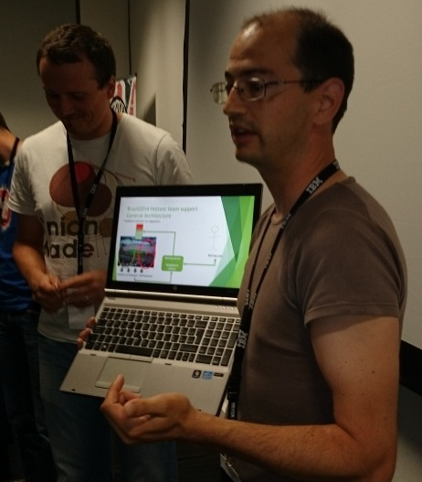
Fridge door light
Sensors:
- Switch
- LED
- Temperature sensor
The LED shows whether the fridge light is still on or not when the fridge door is shut. The temperature sensor also checks whether the door is shut properly.
{kind=link}
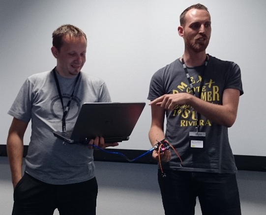
{kind=link}
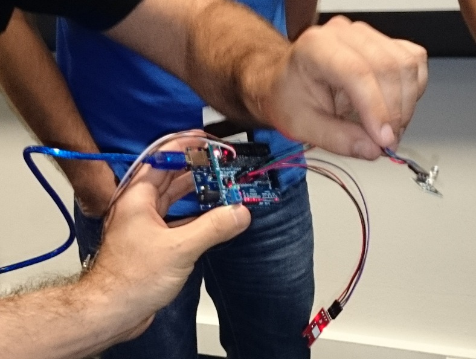
The winners
Perhaps slightly predictably, flying the quadcopter with a light sensor and joystick caught the attention of the judges. Here is their in-flight demo, courtesy of @andypiper:
Thanks to…
Thanks to all the people who took part and had fun with us. I didn’t get everyone’s names but I’ve posted the photos on our G+ page where you’re welcome to tag anyone you recognise.
Thanks also to @tom_will_banks (Liberty profile Technical Evangelist) for organising and running the event, and to @alex_pringle and Ant Elder (Liberty profile developers and enthusiastic hackers) for providing technical support.